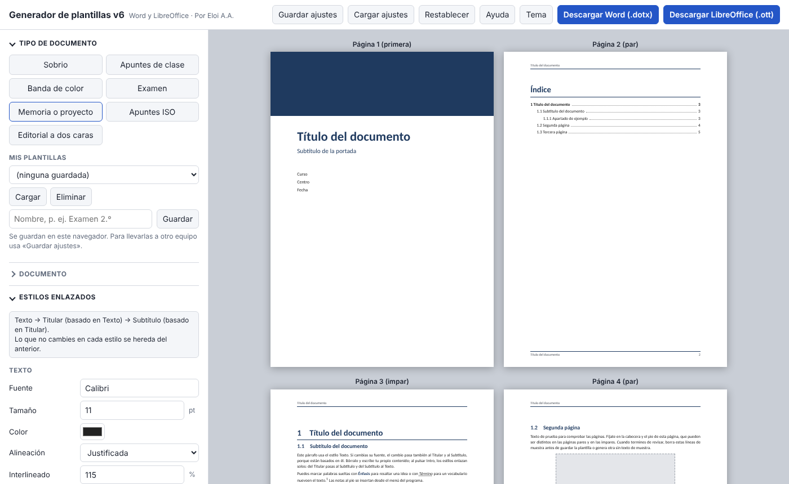

Diseña una plantilla con estilos enlazados, portada, índice, cabecera, pie, fondo y tablas, y descárgala lista para Word o LibreOffice.

Un solo archivo HTML. Se abre con doble clic en cualquier navegador.
Descarga la misma plantilla como .dotx para Word o como .ott para LibreOffice Writer.
El Titular se basa en Texto y el Subtítulo en el Titular: un cambio en Texto pasa a los tres.